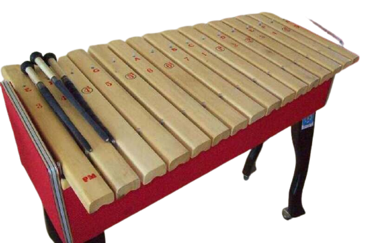

Sulawesi Utara

Gambar diatas adalah Kolintang, Kolintang sangat terkenal di Indonesia dari Suku Minahasa. Cara memainkan alat musik ini adalah dengan dipikul. Ada 3 alat pemukul untuk kolintang 2 di tangan kiri dan 1 di tangan kanan. Alat musik ini dimainkan secara Ansambel untuk mengiringi acara adat, tari, menyanyi dan bermusik.